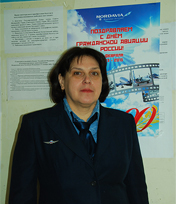
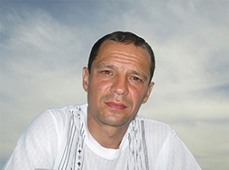
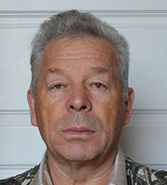

Настройка режима отображения:
Тип шрифта
Без засечек
С засечками
Расстояние между буквами
Маленький
Средний
Большой
Размер текста
А
А
А
Цветовая схема
Ц
Ц
Ц
Ц
Ц
Изображения
Показать
Скрыть
Ч/б
Сбросить настройки
ВЕРСИЯ ДЛЯ СЛАБОВИДЯЩИХ
Администрация муниципального образования
«Сельское поселение «Соловецкое»
Новости
Администрация
Противодействие коррупции
Структура администрации
Сведения о доходах
Населенные пункты
История
Вакансии
Документы
Контакты
Подготовка к соревнованиям «Школа безопасности»
14.04.2019
поздравления
25 марта – День работника культуры России
25.03.2019
ГИБДД
Внимание – дети!
17.03.2019
ГО и ЧС
Предупреждение №58
17.03.2019
Молодёжь
Палата молодых депутатов Приморского района в ежегодной всероссийской акции «Библионочь-2019»
16.03.2019
Культура
10-летний юбилей хорового коллектива “Желаннушки”
15.03.2019
Все новости
Клишова Татьяна Сергеевна
Глава МО
"Сельское поселение Соловецкое"
Совет депутатов:
Бургела Анна Викторовна
Выдвинута:
ВПП "Единая Россия"

Ивановская Виктория Евгеньевна
Выдвинута:
ВПП "Единая Россия"
Янушко Людмила Алексеевна
Выдвинута:
ПП ЛДПР

Тищенко Сергей Анатольевич
Самовыдвиженец

Кошев Александр Дмитриевич
Самовыдвиженец
Документы
Постановление №3 от 1 февраля 2019 г. «Об утверждении административного регламента осуществления муниципального контроля за сохранностью автомобильных дорог местного значения на территории муниципального образования «Сельское поселение Соловецкое»
«Вестник МО «Соловецкое» № 53 от 10 апреля 2019 года
Решение № 30/2 от 5 апреля 2019 г. «Об установлении общего числа членов конкурсной комиссии по отбору кандидатур на должность главы муниципального образования «Сельское поселение Соловецкое» и назначении половины членов конкурсной комиссии»
Постановление №3 от 1 февраля 2019 г. «О назначении конкурса по отбору кандидатур на должность главы муниципального образования «Сельское поселение Соловецкое»»
Постановление №3 от 1 февраля 2019 г. «Об утверждении административного регламента осуществления муниципального контроля за сохранностью автомобильных дорог местного значения на территории муниципального образования «Сельское поселение Соловецкое»
Решение № 30/2 от 5 апреля 2019 г. «Об утверждении схемы семимандатного избирательного округа для проведения выборов депутатов муниципального Совета муниципального образования «Сельское поселение Соловецкое» в 2017-2026 г.»
Постановление №3 от 1 февраля 2019 г. «Об утверждении административного регламента осуществления муниципального контроля за сохранностью автомобильных дорог местного значения на территории муниципального образования «Сельское поселение Соловецкое»
Решение № 30/2 от 5 апреля 2019 г. «Об установлении общего числа членов конкурсной комиссии по отбору кандидатур на должность главы муниципального образования «Сельское поселение Соловецкое» и назначении половины членов конкурсной комиссии»
«Вестник МО «Соловецкое» № 53 от 10 апреля 2019 года
Все документы
Полезные ссылки
Приморский район
Государственные слуги
Новости
Мероприятия
Обращения граждан
Контакты
Показать больше
Скрыть
Администрация муниципального образования
«Сельское поселение «Соловецкое»
Глава муниципального образования:
Клишова Татьяна Сергеевна
Адрес:
164070, посёлок Соловецкий,
Архангельская область, ул. Заозерная, д. 4
Телефон:
8 (8183) 59-03-36
E-mail:
mo_solovki@mail.ru